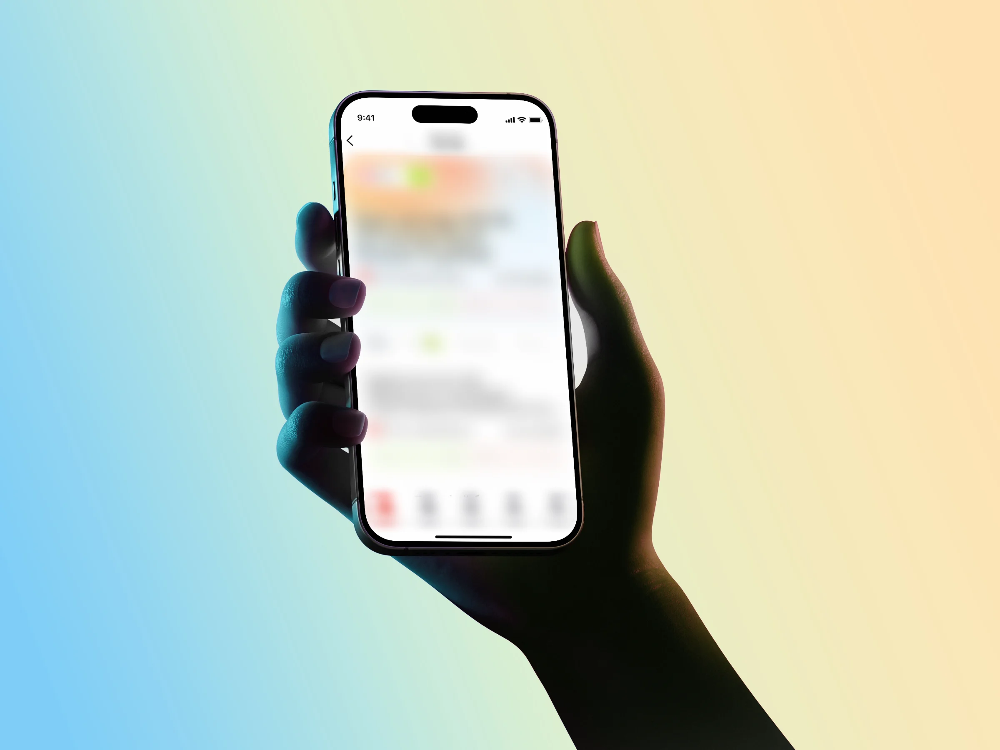
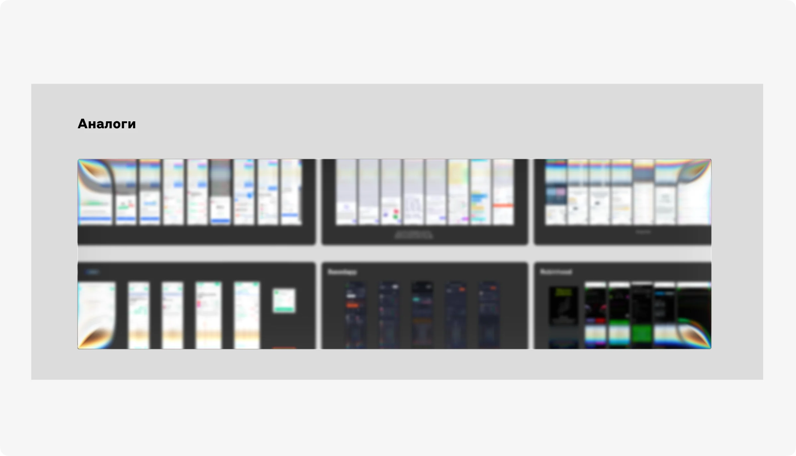
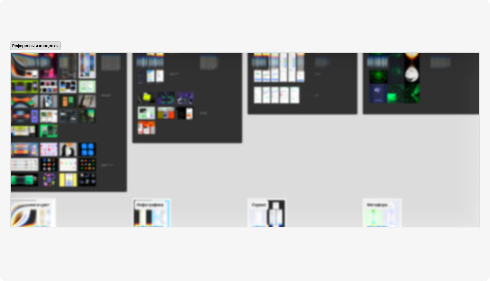
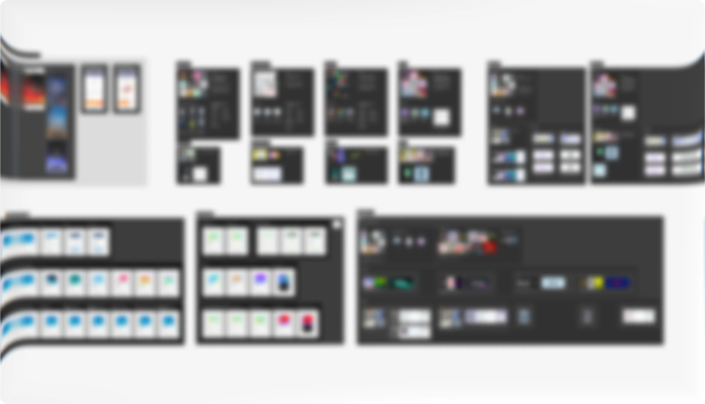
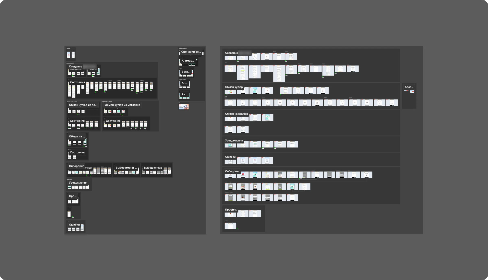

Context
This project is under NDA, so I can’t disclose its name, purpose, or show the final interfaces. In this case study, I focus on the process — from the initial brief to a fully developed product handed off to engineering.
My Role
I co-owned the design process with the Design Lead: I designed user flows and wireframes, developed visual concepts, worked through states and edge cases, and defined the approach to illustration and motion.
I also prepared briefs for the Illustrator and Motion Designer, joined stakeholder meetings, supported implementation, and conducted design reviews.
Team
I worked with a Design Lead, Product Manager, Stakeholder, Illustrator, Motion Designer, Frontend and Backend Engineers, and QA.

Constantly Evolving Requirements
The concept stage took longer than usual because the product and its requirements were evolving in parallel with the design. The brief changed significantly several times, which meant some directions had to be rebuilt from scratch.
First, Understand the Problem
We started by studying the brief, target audience, and product requirements. I conducted a competitor analysis, then reviewed the findings with the Design Lead and took part in an internal brainstorming session.

UX and Visual Exploration in Parallel
After the research phase, I started collecting visual references while simultaneously working on wireframes. This allowed us to test the logic of the user flows and the visual direction independently before connecting them too early.
15+ Concepts
During the concept stage, I developed more than 15 visual directions in response to the changing requirements.
Each concept was more than a collection of stylistic references: I developed a core metaphor, created examples of key visuals using generative tools, and prepared a presentation explaining the idea and how it could evolve across the product.

We Tested More Than the Visual Direction
In parallel, the research team tested prototypes with users. Based on the findings, I refined the flows, adjusted individual steps, and iterated on the overall user journey.
From Concept to System
Once one of the concepts was approved, we worked with the engineering team to validate its technical constraints and determine which visual and motion mechanics could realistically be implemented within the Mini App.
At the same time, I prepared detailed briefs for the Illustrator and Motion Designer, covering required states, graphic behavior, and asset requirements so the visual language could remain consistent across different product scenarios.

Turning the Concept Into a Product
Once the visual direction was established, I designed the remaining parts of the Mini App, including onboarding, the personal account area, the store, and additional user scenarios.
For each flow, I worked through primary and alternative states, errors, and edge cases. In parallel, I built the UI Kit so that new screens could scale without breaking the visual system.
Handoff Wasn’t the Final Step
After all screens were approved, I prepared the designs for development, created desktop adaptations, and documented the required component states and behavior.
I stayed involved during implementation: answering developers’ questions, reviewing built screens, and conducting design reviews to make sure the production version preserved both the product logic and the visual principles of the concept.
After launch, the team will validate the key product hypotheses with real users and continue iterating on the MVP based on actual usage data.